FAIL 34.69% text-advanced-white-space-pre-wrap · pre-wrap · REALMissing−115.5px Rmissing 41.2%extra 9.4%ΔE 76.1shift (-0.1,-0.5)px
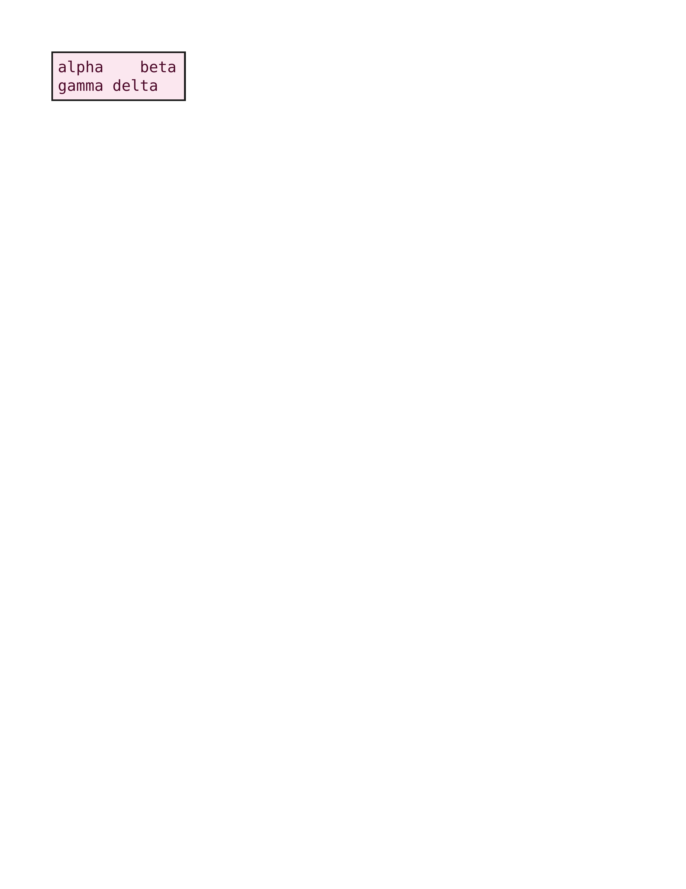
Chrome ref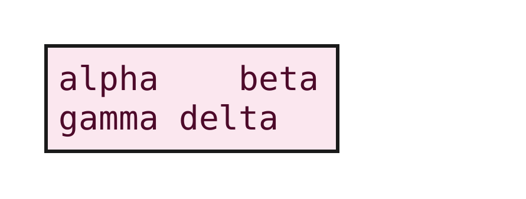
ironpress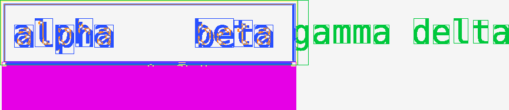
classed diffdiff colours:MissingExtraColorErrGeomShiftAA edgeMatchAA / edge-jitter = cross-rasterizer measurement ceiling, not a bug.
why: content clipped/truncated (41.2% missing)
white-space:pre-wrap preserves spaces while still soft-wrapping at the box edge.
regions (6)
| class | bbox (CSS px) | area% | magnitude | reason |
|---|
| Missing | 1,34 → 161,60 | 25.26 | ΔE 84.2 ΔRGB(-225,-205,-213) shift(0.0,-1.1) | content clipped/truncated (25.3% missing) |
| GeometrySize | 2,2 → 160,33 | 1.35 | ΔRGB(225,205,213) shift(-0.1,-0.5) | box −115.5px on right edge (size/box-model mismatch) |
| ColorValue | 106,10 → 127,26 | 1.08 | ΔE 76.1 ΔRGB(-13,-17,-15) shift(-0.7,-0.5) | fill recolour ΔRGB(-13,-17,-15) (ΔE 76.1) |
| Extra | 0,0 → 167,35 | 0.77 | ΔRGB(9,-4,3) | extra paint where Chrome is blank (0.8%) |
| ColorValue | 30,13 → 40,29 | 0.61 | ΔE 76.1 ΔRGB(-13,-17,-15) shift(-0.6,-0.5) | fill recolour ΔRGB(-13,-17,-15) (ΔE 76.1) |
| ColorValue | 41,10 → 50,25 | 0.55 | ΔE 76.1 ΔRGB(-36,-46,-41) shift(-0.6,-0.3) | fill recolour ΔRGB(-36,-46,-41) (ΔE 76.1) |
source · cases/text-advanced/text-advanced-white-space-pre-wrap.html
1<!DOCTYPE html>
2<html lang="en">
3<head>
4<meta charset="utf-8">
5<style>
6 * { margin: 0; box-sizing: border-box; }
7 html, body { background: #ffffff; }
8 .box {
9 width: 160px;
10 margin: 24px;
11 padding: 6px;
12 border: 2px solid #1a1a1a;
13 background: #fbe7ef;
14 font-family: ParityMono;
15 font-size: 18px;
16 line-height: 1.2;
17 color: #4d0a2a;
18 white-space: pre-wrap;
19 }
20</style>
21</head>
22<body>
23 <div class="box">alpha beta gamma delta</div>
24</body>
25</html>
FAIL 33.64% text-advanced-white-space-nowrap · nowrap · REALMissing+3.8px Bmissing 10.1%ΔE 68.4shift (0.0,-0.8)px
Chrome ref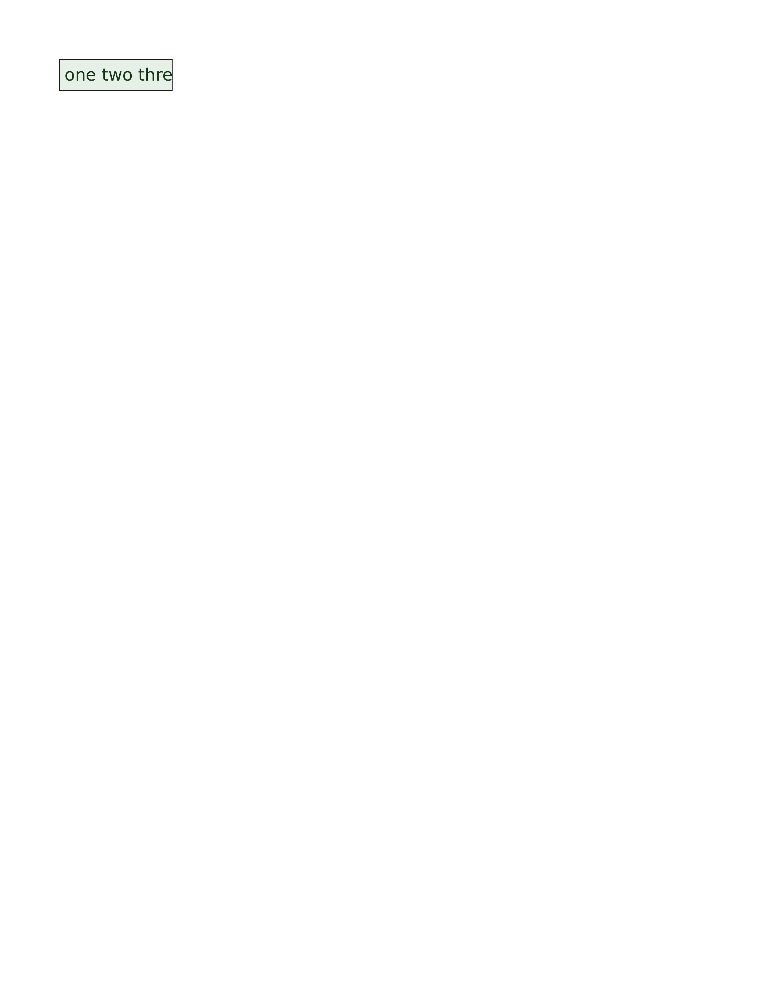
ironpressclassed diff diff colours:MissingExtraColorErrGeomShiftAA edgeMatchAA / edge-jitter = cross-rasterizer measurement ceiling, not a bug.
why: content clipped/truncated (10.1% missing)
white-space:nowrap forces a single line that is clipped by overflow:hidden in a narrow box.
regions (6)
| class | bbox (CSS px) | area% | magnitude | reason |
|---|
| Missing | 0,33 → 120,37 | 13.33 | ΔRGB(-205,-214,-205) shift(0.0,-0.8) | content clipped/truncated (13.3% missing) |
| ColorValue | 1,1 → 119,32 | 6.42 | ΔE 68.4 ΔRGB(205,214,205) shift(-0.2,-0.5) | fill recolour ΔRGB(+205,+214,+205) (ΔE 68.4) |
| ColorValue | 84,9 → 102,24 | 3.20 | ΔE 68.4 ΔRGB(32,28,31) shift(-0.5,-0.3) | fill recolour ΔRGB(+32,+28,+31) (ΔE 68.4) |
| ColorValue | 45,10 → 63,24 | 2.76 | ΔE 68.4 ΔRGB(-63,-55,-62) shift(-0.5,-0.5) | fill recolour ΔRGB(-63,-55,-62) (ΔE 68.4) |
| ColorValue | 63,12 → 79,25 | 2.26 | ΔE 68.4 ΔRGB(139,120,135) shift(-0.7,-0.7) | fill recolour ΔRGB(+139,+120,+135) (ΔE 68.4) |
| ColorValue | 7,12 → 18,25 | 1.80 | ΔE 68.4 ΔRGB(-11,-10,-11) shift(-0.6,-0.6) | fill recolour ΔRGB(-11,-10,-11) (ΔE 68.4) |
source · cases/text-advanced/text-advanced-white-space-nowrap.html
1<!DOCTYPE html>
2<html lang="en">
3<head>
4<meta charset="utf-8">
5<style>
6 * { margin: 0; box-sizing: border-box; }
7 html, body { background: #ffffff; }
8 .box {
9 width: 120px;
10 margin: 24px;
11 padding: 6px;
12 border: 2px solid #1a1a1a;
13 background: #e7f0e7;
14 font-family: ParitySans;
15 font-size: 18px;
16 line-height: 1.2;
17 color: #14391a;
18 white-space: nowrap;
19 overflow: hidden;
20 }
21</style>
22</head>
23<body>
24 <div class="box">one two three four five</div>
25</body>
26</html>
FAIL 25.32% text-advanced-white-space-normal · normal · REALMissing+3.2px Bmissing 3.5%extra 0.9%ΔE 80.1shift (0.0,-0.3)px
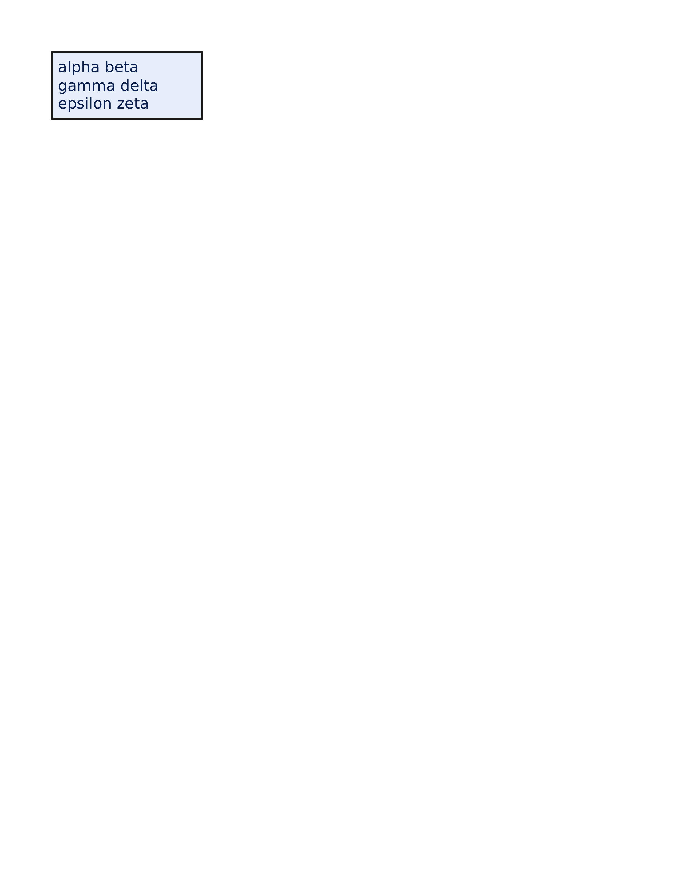
Chrome ref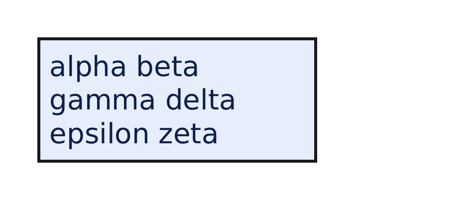
ironpress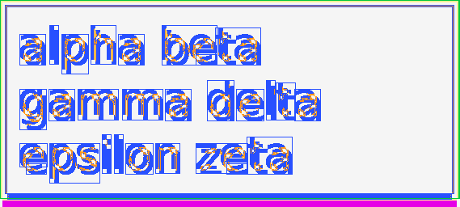
classed diffdiff colours:MissingExtraColorErrGeomShiftAA edgeMatchAA / edge-jitter = cross-rasterizer measurement ceiling, not a bug.
why: content clipped/truncated (3.5% missing)
white-space:normal collapses runs of spaces and newlines into single soft-wrappable spaces.
regions (6)
| class | bbox (CSS px) | area% | magnitude | reason |
|---|
| Missing | 1,79 → 180,82 | 3.09 | | content clipped/truncated (3.1% missing) |
| ColorValue | 3,77 → 179,79 | 2.64 | ΔE 84.2 ΔRGB(-205,-212,-225) shift(0.0,-1.1) | fill recolour ΔRGB(-205,-212,-225) (ΔE 84.2) |
| GeometrySize | 2,2 → 180,76 | 2.10 | ΔRGB(205,212,225) shift(0.0,-0.3) | box +3.2px on bottom edge (size/box-model mismatch) |
| ColorValue | 20,57 → 39,72 | 1.16 | ΔE 79.4 ΔRGB(13,13,11) shift(-0.5,-0.4) | fill recolour ΔRGB(+13,+13,+11) (ΔE 79.4) |
| ColorValue | 64,10 → 86,26 | 1.08 | ΔE 79.4 ΔRGB(-22,-21,-18) shift(-0.5,-0.5) | fill recolour ΔRGB(-22,-21,-18) (ΔE 79.4) |
| ColorValue | 85,11 → 103,26 | 0.97 | ΔE 79.4 ΔRGB(25,23,20) shift(-0.5,-0.5) | fill recolour ΔRGB(+25,+23,+20) (ΔE 79.4) |
source · cases/text-advanced/text-advanced-white-space-normal.html
1<!DOCTYPE html>
2<html lang="en">
3<head>
4<meta charset="utf-8">
5<style>
6 * { margin: 0; box-sizing: border-box; }
7 html, body { background: #ffffff; }
8 .box {
9 width: 180px;
10 margin: 24px;
11 padding: 6px;
12 border: 2px solid #1a1a1a;
13 background: #e7eefb;
14 font-family: ParitySans;
15 font-size: 18px;
16 line-height: 1.2;
17 color: #0a1f4d;
18 white-space: normal;
19 }
20</style>
21</head>
22<body>
23 <div class="box">alpha beta
24gamma delta epsilon zeta</div>
25</body>
26</html>
FAIL 23.35% text-advanced-white-space-pre-line · pre-line · REALColorValue+2.6px Bmissing 3.3%extra 1.0%ΔE 70.7shift (0.0,-0.4)px
Chrome ref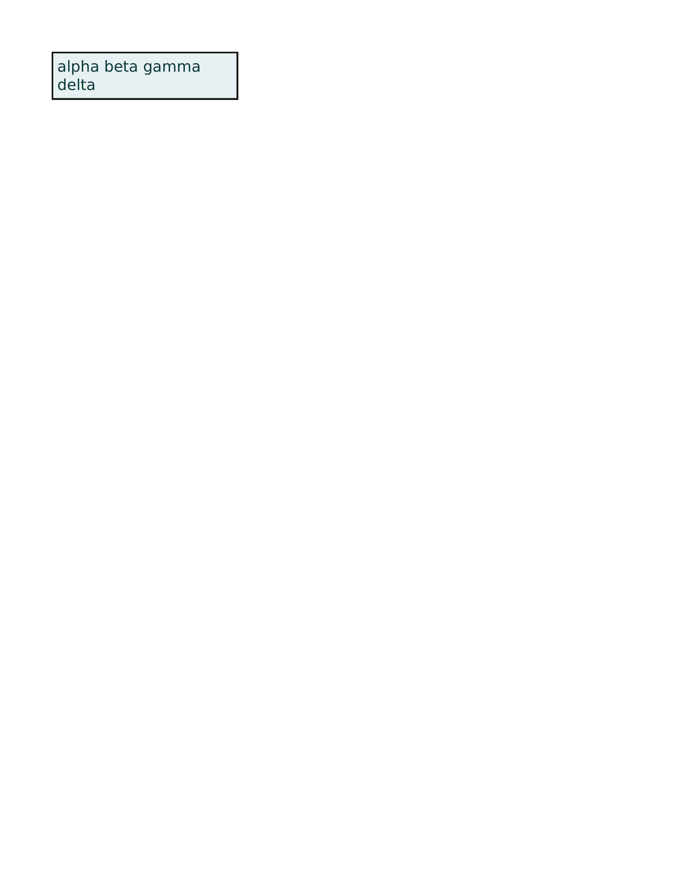
ironpressclassed diff diff colours:MissingExtraColorErrGeomShiftAA edgeMatchAA / edge-jitter = cross-rasterizer measurement ceiling, not a bug.
why: fill recolour ΔRGB(-122,-100,-100) (ΔE 70.7)
white-space:pre-line collapses spaces but preserves explicit newlines, wrapping at the box edge.
regions (6)
| class | bbox (CSS px) | area% | magnitude | reason |
|---|
| ColorValue | 3,55 → 219,57 | 3.64 | ΔE 84.2 ΔRGB(-205,-214,-214) shift(0.0,-1.3) | fill recolour ΔRGB(-205,-214,-214) (ΔE 84.2) |
| Missing | 1,58 → 220,60 | 3.18 | | content clipped/truncated (3.2% missing) |
| GeometrySize | 2,2 → 220,55 | 2.33 | ΔRGB(205,214,214) shift(0.0,-0.4) | box +2.6px on bottom edge (size/box-model mismatch) |
| ColorValue | 31,32 → 64,47 | 1.58 | ΔE 66.8 ΔRGB(118,97,97) shift(-0.0,-0.4) | fill recolour ΔRGB(+118,+97,+97) (ΔE 66.8) |
| ColorValue | 64,10 → 86,26 | 1.21 | ΔE 66.8 ΔRGB(-22,-18,-18) shift(-0.6,-0.5) | fill recolour ΔRGB(-22,-18,-18) (ΔE 66.8) |
| ColorValue | 85,11 → 103,26 | 1.08 | ΔE 66.8 ΔRGB(22,18,18) shift(-0.5,-0.6) | fill recolour ΔRGB(+22,+18,+18) (ΔE 66.8) |
source · cases/text-advanced/text-advanced-white-space-pre-line.html
1<!DOCTYPE html>
2<html lang="en">
3<head>
4<meta charset="utf-8">
5<style>
6 * { margin: 0; box-sizing: border-box; }
7 html, body { background: #ffffff; }
8 .box {
9 width: 220px;
10 margin: 24px;
11 padding: 6px;
12 border: 2px solid #1a1a1a;
13 background: #e7f0f0;
14 font-family: ParitySans;
15 font-size: 18px;
16 line-height: 1.2;
17 color: #0a3a3a;
18 white-space: pre-line;
19 }
20</style>
21</head>
22<body>
23 <div class="box">alpha beta
24gamma delta</div>
25</body>
26</html>
FAIL 10.56% text-advanced-white-space-pre · pre · REALMissing+3.2px Bmissing 3.6%extra 0.7%ΔE 80.4shift (0.0,-0.4)px
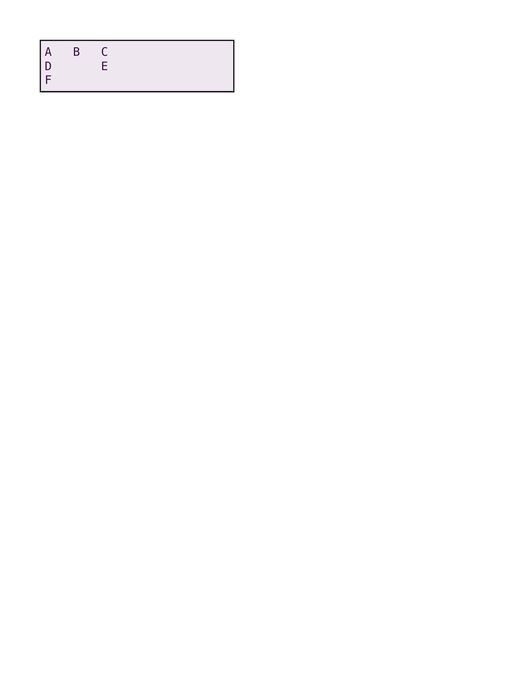
Chrome ref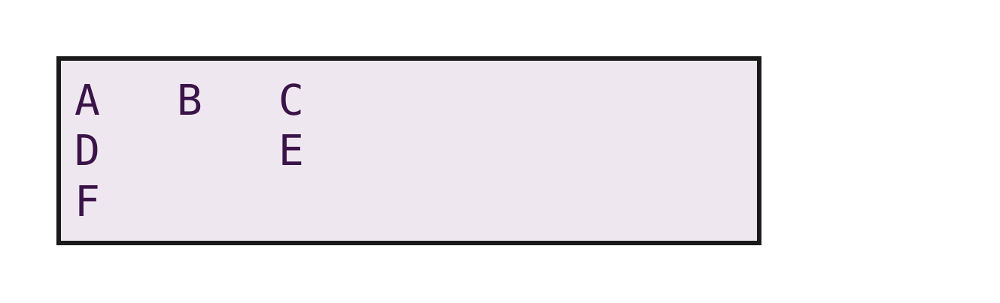
ironpress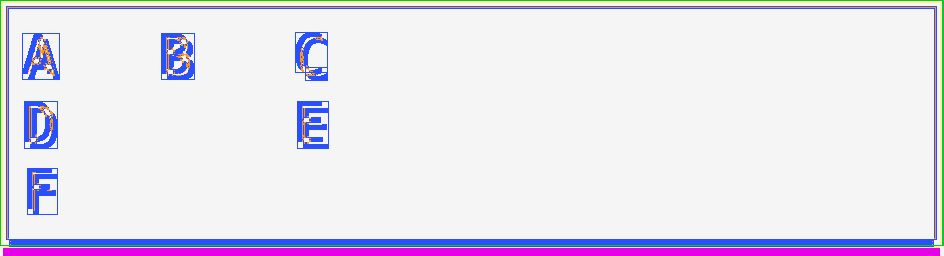
classed diffdiff colours:MissingExtraColorErrGeomShiftAA edgeMatchAA / edge-jitter = cross-rasterizer measurement ceiling, not a bug.
why: content clipped/truncated (3.6% missing)
white-space:pre preserves runs of spaces and explicit newlines in monospace text with no wrapping.
regions (6)
| class | bbox (CSS px) | area% | magnitude | reason |
|---|
| Missing | 1,79 → 300,82 | 3.10 | | content clipped/truncated (3.1% missing) |
| ColorValue | 3,77 → 299,79 | 2.68 | ΔE 83.2 ΔRGB(-213,-205,-214) shift(0.0,-1.1) | fill recolour ΔRGB(-213,-205,-214) (ΔE 83.2) |
| GeometrySize | 2,2 → 300,76 | 1.73 | ΔRGB(213,205,214) shift(0.0,-0.4) | box +3.2px on bottom edge (size/box-model mismatch) |
| Extra | 0,0 → 302,78 | 0.69 | | extra paint where Chrome is blank (0.7%) |
| ColorValue | 52,11 → 62,25 | 0.47 | ΔE 77.1 ΔRGB(15,17,14) shift(-0.3,-0.4) | fill recolour ΔRGB(+15,+17,+14) (ΔE 77.1) |
| ColorValue | 8,32 → 18,47 | 0.46 | ΔE 77.1 ΔRGB(-20,-23,-18) shift(-0.4,-0.4) | fill recolour ΔRGB(-20,-23,-18) (ΔE 77.1) |
source · cases/text-advanced/text-advanced-white-space-pre.html
1<!DOCTYPE html>
2<html lang="en">
3<head>
4<meta charset="utf-8">
5<style>
6 * { margin: 0; box-sizing: border-box; }
7 html, body { background: #ffffff; }
8 .box {
9 width: 300px;
10 margin: 24px;
11 padding: 6px;
12 border: 2px solid #1a1a1a;
13 background: #efe7f0;
14 font-family: ParityMono;
15 font-size: 18px;
16 line-height: 1.2;
17 color: #3a1448;
18 white-space: pre;
19 }
20</style>
21</head>
22<body>
23 <div class="box">A B C
24D E
25F</div>
26</body>
27</html>